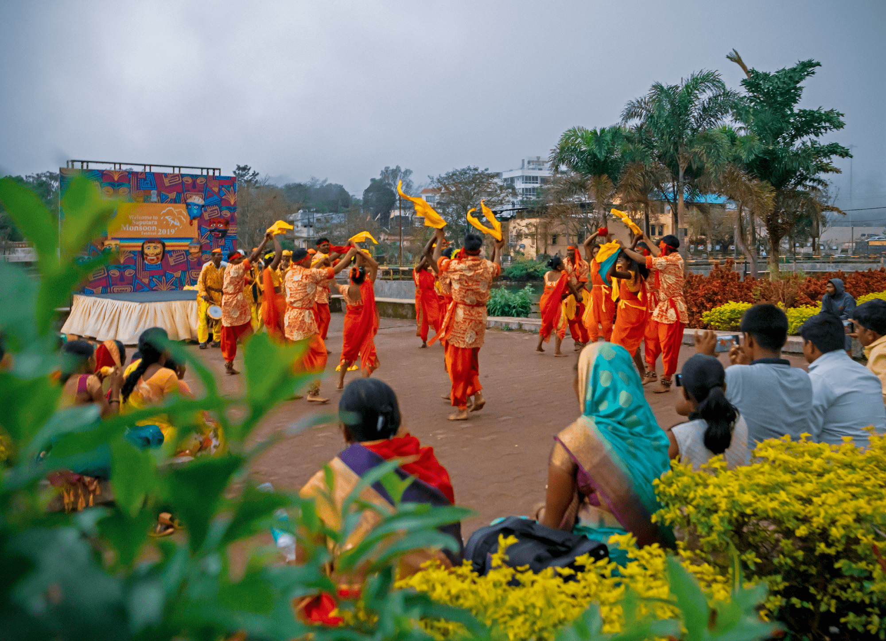

Dangs Darbar is a fair organized during the Holi festival in Ahwa, the headquarters of Dangs district of Gujarat, India. Five old Dang Darbars are given shirpav (pension) by the government in Dangs Darbar. At the Dang Darbar, traditionally held in the Dang area, tribal people performed their dances and music and it was celebrated as a festival.
Image Source: Gujarattourism
Dangs Darbar is a three-day cultural festival held each year celebrated with Holi.
The fair is organized at Ahwa in Dangs district,Gujarat, which is located in the Saputara hills of India.
The Holi is an important festival in the Dangs region. The administration of Dangs district was ruled by kings and chief till 1942, in the same year the forest belts of Dangs district were handed over to the British. The amount to be given to the Bhil kings and chiefs as a right of lease and then in the form of annual annuity was given every year to the Bhil kings, chiefs, their friends, police patels, courtiers by filling the Dang Darbar.
On the day of Dangs Darbar, the tribesmen go to the Ganges to worship Nag Devta(snakes). According to a legend, this is the area of Dandakaranya forest described in Ramayana.
Many tribals from Ahwa used to gather in the court and settle their grievances, the process is still going on but today the tribal king of Dangs sits, but the grievances are redressed by the district collector. The fair is organized by the district authorities and is attended by Dang Darbars, hence it is known as Dangs Darbar.
Tribal dances are the main attraction of this festival. Various groups present their dance, instrumental and musical arts and perform music with instruments like Kahalia and Tadpur. Pilgrims from home and abroad come to enjoy the tribal culture at this fair. On the last day of the festival, the tribesmen light a Holi fire and sprinkle colored water on the community present.